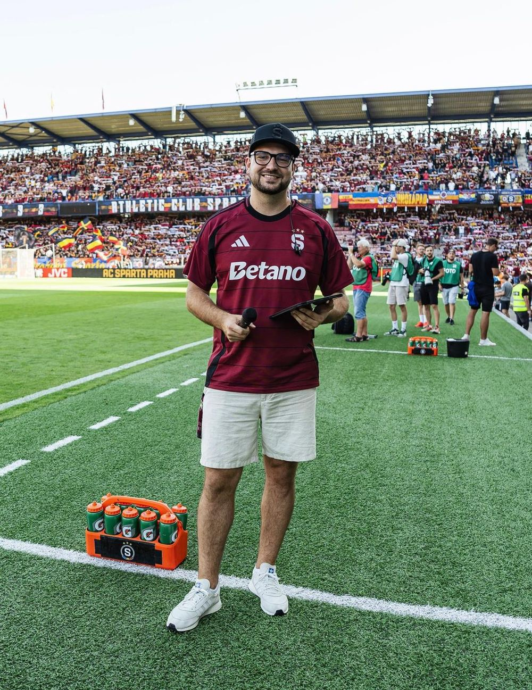

150+odmoderovaných akcí
Filip Lejček — profesionální moderátor
Moderování, které drží pozornost.
Profesionální moderátor.To je Filip Lejček.
Konference, firemní večer, sportovní události slavnostní příležitost – přizpůsobím stylmoderace vašemu publiku, programu i atmosféřecelé akce. Zajistím profesionální průběh,energii a nezapomenutelný zážitek.
8+let na pódiu
- Spontánní
- Připravený
- Vtipný
- Spolehlivý
- Energický

Moderování, které dává vašemu eventu energii i řád
Jmenuji se Filip Lejček a moderování pro mě není jen práce – je to poslání. Už více než osm let provázím hosty firemními galavečery, plesy, sportovními akcemi i odbornými konferencemi.
Každé události přizpůsobím svůj styl – od profesionálního a reprezentativního projevu až po uvolněnou atmosféru plnou energie. Díky zkušenostem z kamery, živého vysílání i stovek akcí dokážu pohotově reagovat na změny, technické komplikace i nečekané situace.
Na každé spolupráci mi záleží. Pečlivě se seznámím s programem, hosty i cíli pořadatelů, aby moderování přirozeně podpořilo celkový charakter akce a zanechalo v hostech silný dojem.
Působím převážně v Praze a okolí, rád však přijedu moderovat kamkoli po celé České republice.
Portfolio služeb
Ke každému formátu přistupuji jinak — od reprezentativního projevu až po uvolněnou zábavu.
01
Firemní akce
Konference, vánoční večírky, veletrhy, prezentace produktů, teambuildingy a slavnostní večery.
02
Sportovní akce
Moderování sportovních utkání, turnajů a doprovodných programů s důrazem na atmosféru.
03
Společenské akce
Plesy, galavečery a prestižní eventy, kde záleží na každém detailu i přesném načasování.
04
Rádio a televize
Citlivé moderování svatebního programu - od obřadu přes hostinu až po večerní zábavu.
05
Výroba reklamních spotů
Hlasová produkce a výroba reklamních spotů do rádia s vlastním studiovým zázemím.
06
Svatební moderátor
Citlivé moderování svatebního programu — od obřadu přes hostinu až po večerní zábavu.
07
Kulturní akce
Městské slavnosti, koncertní programy, festivaly, zahájení akcí a doprovodný program pro veřejnost.
08
Dětské akce
Dětské narozeninové oslavy, městské i firemní dětské dny s programem šitým na míru.
Právě na vlně kreativity
Naplánujme vaši akci.
Sdělte mi termín, místo a charakter akce. Do jednoho pracovního dne se vám ozvu s návrhem moderování i cenovou nabídkou.
Nezávazná poptávka
0:00
0:00
0:00
0:00
0:00
0:00
„Spolupráce s Filipem Lejčkem byla od začátku velmi profesionální. Oceňujeme jeho přirozený projev, výbornou přípravu a schopnost citlivě reagovat na atmosféru celé akce. Dokázal udržet plynulý průběh programu, pracovat s publikem a zároveň zachovat reprezentativní úroveň odpovídající charakteru firemní události. Filip působil jistě, kultivovaně a spolehlivě, což výrazně přispělo k celkově pozitivnímu dojmu z akce."
„Filip Lejček se při moderování projevil jako spolehlivý a pohotový profesionál. Velmi dobře zvládl komunikaci s publikem, dynamiku programu i nenucené propojení sportovní atmosféry s reprezentativním vystupováním. Jeho moderátorský styl je přirozený, energický a zároveň dostatečně kultivovaný, což je pro akce spojené se značkou našeho klubu důležité. Spolupráci hodnotíme velmi pozitivně a oceňujeme zejména jeho připravenost, flexibilitu a jistotu v projevu."
„S Filipem spolupracuji na projektech spojených s EA SPORTS FC již více než 5 let a mohu ho jednoznačně doporučit. Jako komentátor je vždy skvěle připravený a zároveň si výborně poradí i s moderováním programu na stagi. Je pohotový, zábavný a dokáže skvěle pracovat s publikem, ať už jde o návštěvníky partnerských stánků, například Hyundai, nebo velkých esportových stagí. Za agenturu PLAYzone ho mohu jen doporučit."
Napište mi
Máte dotaz nebo poptáváte termín? Vyplňte formulář — ozvu se zpravidla do jednoho pracovního dne.